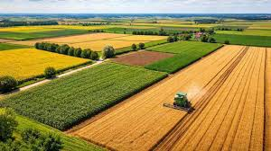
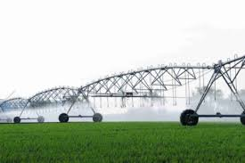
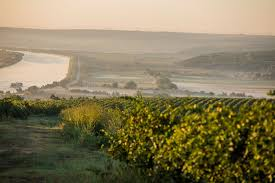
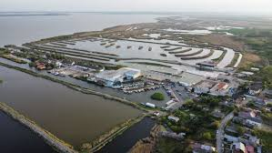
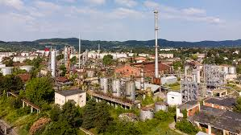
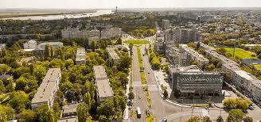
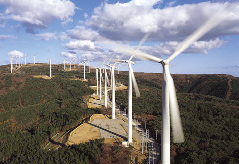
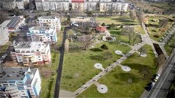
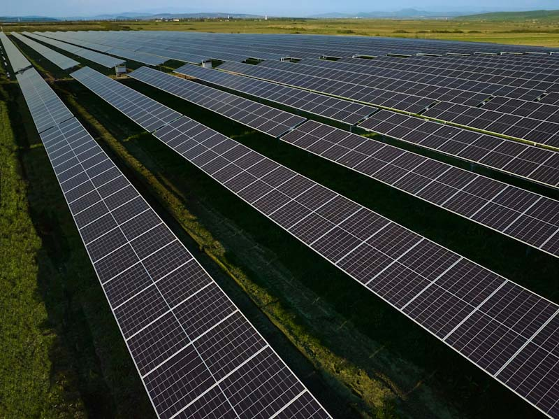

Bine ai venit în Dobrogea!
Peisajele antropice din Dobrogea s-au format ca un răspuns direct la nevoia omului de a domina un teritoriu marcat de contraste, unde stepa aridă întâlnește fluviul și marea. Modul în care aceste peisaje sunt create presupune o succesiune de intervenții tehnice masive, începând cu decopertarea stratului vegetal și dislocarea rocilor pentru exploatări miniere, continuând cu excavarea unor volume uriașe de pământ pentru canalele de navigație și culminând cu instalarea unor structuri metalice gigantice pentru producția de energie. Aceste transformări nu sunt doar estetice, ci reprezintă o reinginerie a reliefului, unde pantele naturale sunt terasate pentru viticultură, iar cursurile de apă sunt deviate sau captate în bazine artificiale pentru a susține agricultura într-o zonă altfel deficitară în precipitații.
Ce sunt peisajele antropice?
Peisajele antropice sunt peisaje create sau puternic modificate de om prin activitățile sale. În Dobrogea, acestea s-au format ca urmare a agriculturii pe suprafețe întinse, a dezvoltării așezărilor, a porturilor și a turismului litoral, dar și a valorificării resurselor naturale. Ele reflectă adaptarea omului la clima aridă, relieful de podiș și poziția strategică dintre Dunăre și Marea Neagră, definind identitatea geografică și economică a regiunii.
Peisaje Agricole
Peisajele agricole din Dobrogea sunt rezultatul transformării stepelor naturale în terenuri cultivate: câmpuri de cereale, plantații, ferme și sisteme de irigație. Aceste peisaje sunt vitale pentru economie și pentru asigurarea securității alimentare regionale, sprijinind comunitățile rurale și practicile tradiționale.
Cum se formează peisajele agricole
Procesul include mai mulți pași practici, pe scurt:
- Evaluare și modelare: analiza solului și a reliefului; terasare sau nivelare acolo unde e necesar.
- Pregătirea terenului: curățare, arat, îmbunătățirea solului și trasarea parcelelor.
- Infrastructură: instalarea sistemelor de irigații/drenaj, drumuri de acces și elemente de protecție (benzi forestiere, terase).
- Gestionare agronomică: plantare, rotație de culturi, mecanizare și aplicarea unor practici durabile (conservarea solului, IPM).

Sistem de irigație
Agricultura in Dobrogea
Impactul agriculturii
Agricultura în Dobrogea a transformat ecosistemele naturale, convertind stepele și pădurile în terenuri cultivate. Această transformare are efecte multiple, atât pozitive, cât și negative:
- Beneficii: asigură securitate alimentară, creează locuri de muncă, susține economia locală și păstrează unele peisaje culturale tradiționale.
- Efecte negative: pierderea biodiversității și a habitatelor native, eroziune și degradare a solului, salinizare în zone irigate, consum ridicat de apă, poluare prin pesticide și fertilizanți, emisie de gaze cu efect de seră și fragmentarea peisajului.
- Măsuri de atenuare: practici agricole durabile (rotirea culturilor, agricultura de conservare, agroecologie), gestionarea eficientă a irigațiilor, reducerea și înlocuirea substanțelor chimice cu metode integrate de combatere a dăunătorilor și restaurarea zonelor naturale pentru a conserva biodiversitatea.



Peisaje Antropice Industriale și Urbane
Peisajele industriale și urbane din Dobrogea includ porturi, rafinării, centrale energetice, parcuri industriale și așezări urbane. Aceste transformări au condus la creștere economică, crearea de locuri de muncă, dezvoltarea infrastructurii și transfer tehnologic. Beneficiile concrete includ acces la energie, conectivitate comercială, servicii medicale și educaționale îmbunătățite și oportunități pentru afaceri locale.

Porturi si activități maritime

Rafinării și facilități industriale

Dezvoltare urbană și infrastructură

Parc eolian
Peisaje antropice industriale
Sunt dominate de infrastructuri industriale (porturi, rafinării, hale, parcuri industriale) și de rețele logistice. Aceste zone susțin economia prin producție și transport, dar implică și provocări de mediu (poluare, apă și sol contaminate, suprafețe impermeabile).
- Caracteristici: zone funcționale, depozite, utilități grele și acces rutier/feroviar.
- Provocări: gestionarea deșeurilor, poluarea și reconversia zonelor industriale.
Peisaje antropice urbane
Zonele urbane combină locuințe, servicii, comerț și infrastructură; ele modelează relieful prin densificare, rețele de transport și zone verzi planificate pentru a îmbunătăți calitatea vieții și mobilitatea.
- Caracteristici: clădiri dense, străzi, spații publice și utilități.
- Soluții: planificare urbană durabilă, spații verzi, transport alternativ și eficiență energetică.
Transformarea urbană
Industrializarea din Dobrogea a accelerat urbanizarea și a atras migranți din alte regiuni. Aceste schimbări au remodelat peisajul tradițional, introducând construcții moderne, rețele de infrastructură complexe și zone de locuințe dense. Efectele includ creșterea economică, dar și provocări de mediu și de calitate a vieții.
- Efecte sociale: extinderea serviciilor și a locurilor de muncă, presiune pe locuințe și infrastructură publică.
- Provocări de mediu: creșterea traficului, poluarea aerului și fonică, impermeabilizarea solurilor și pierderea spațiilor verzi.
- Soluții practice: planificare urbană durabilă, regenerare urbană, reabilitarea clădirilor, transport public eficient și crearea de spații verzi pentru a îmbunătăți calitatea vieții.
Implicarea comunității și politici integrate de dezvoltare sunt esențiale pentru un echilibru între creștere și mediu.



Importanța peisajelor antropice
Importanța peisajelor antropice (cele create sau modificate de om) este imensă, deoarece ele reprezintă „scena” pe care se desfășoară întreaga noastră viață modernă. În Dobrogea, acest lucru este vizibil la fiecare pas, de la porturile gigantice până la câmpurile de eoliene. Iată principalele motive pentru care aceste peisaje sunt esențiale:
Cum se formează peisajele antropice?
- Intenția umană: Dorința de a hrăni populație, a dezvolta economie
- Modificări sistematice: Tăierea pădurilor, ararea terenurilor, construcția de infrastructură
- Managementul activ: Irigația, fertilizanți, mecanizare agricolă, transport industrial
- Integrazione ecologică: Noi ecosisteme se dezvoltă, adaptate la noile condiții
- Rezultat final: Peisaje complexe care furnizează servicii ecosistemice, dar cu costuri ambientale
Surse și Referințe
Următoarele resurse au fost folosite în elaborarea acestui site și oferă informații suplimentare despre peisajele antropice și Dobrogea:
Surse informative
Geografia Dobrogei
Peisaje Antropice și Mediu
Porturi și Industrie
Resurse educative
Imagini și multimedia
Referințe suplimentare
Resurse pentru agricultură și mediu
- FAO - Food and Agriculture Organization
- European Commission - Agricultură și politici agricole (DG AGRI)
- Eurostat - Date statistice (utilizare a terenurilor, producție agricolă)
- World Bank - Programe și studii despre agricultură și dezvoltare rurală
- WWF România - Resurse despre biodiversitate și conservare
- Ministerul Mediului - Politici și reglementări naționale
⚖️ Licență și atribuiri
Acest site a fost creat în scop educativ. Imagini și conținut multimedia sunt din surse gratuite și libere de drepturi de autor, sau sunt utilizate sub licență Creative Commons cu atribuire corespunzătoare.